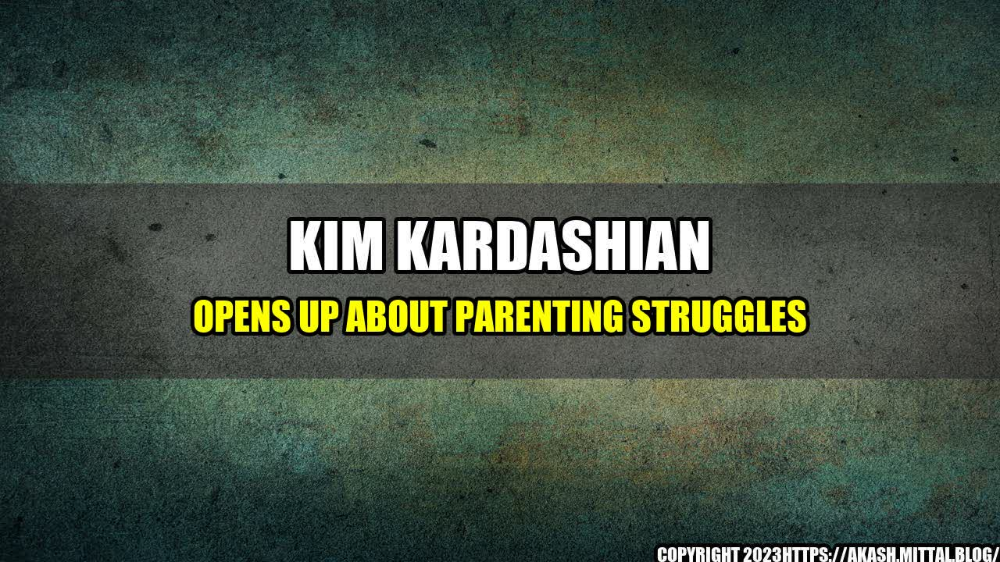

Kim Kardashian Opens Up About Parenting Struggles

It's no secret that being a parent is hard work, even for celebrities. Kim Kardashian is the latest celebrity to open up about her struggles with parenting, sharing some of her experiences and insights with fans in a recent interview.
Kardashian's Parenting Struggles
In the interview, Kardashian revealed several struggles she has faced as a parent:
- Her son Saint, who is four years old, has been diagnosed with asthma and allergies, making it difficult for him to breathe at times.
- Her daughter North, who is seven years old, is getting to the age where she wants more independence, but Kardashian is struggling with finding the right balance between letting her explore and protecting her.
- She also admitted that she sometimes struggles with managing her children's behavior, saying "I mean, no one's perfect, and I get frustrated sometimes, and it's about staying calm and patient and knowing that they're kids and figuring out how to communicate and understand them."
Kardashian's struggles are relatable to many parents, and it's refreshing to see a celebrity speak openly about the challenges of parenting.
Practical Tips for Managing Parenting Struggles
So what can parents do when they're faced with similar struggles? Here are a few practical tips:
- If your child has a health condition like asthma or allergies, work with their doctor on a treatment plan that can help manage their symptoms and keep them healthy.
- When it comes to letting your child have more independence, start small and gradually increase their freedom as they demonstrate responsibility and trustworthiness.
- When dealing with challenging behavior, try to stay calm and patient, and use positive reinforcement and clear rules and consequences to help guide your child's behavior.
Conclusion
Parenting is a tough job, and it's important to remember that even celebrities struggle with it. However, by sharing her experiences and insights, Kim Kardashian has shown that she's just like any other parent trying to do her best for her kids.
If you're a parent facing similar struggles, remember that you're not alone, and there are resources and support available to help you. By working with your child's doctor, setting clear boundaries and consequences, and staying patient and positive, you can navigate the ups and downs of parenting with grace and confidence.
References:
Hashtags:
- #parentingstruggles
- #kimkardashian
- #celebrityparenting
- #parentingtips
Category: Parenting
Curated by Team Akash.Mittal.Blog
Share on Twitter Share on LinkedIn